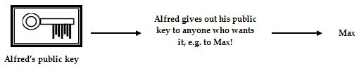
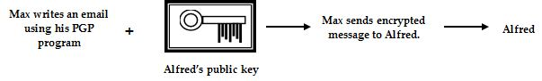

<div id="jsn-maincontent" class="span9 order1  row-fluid">
					<div id="jsn-maincontent_inner">
						<div id="jsn-centercol"><div id="jsn-centercol_inner">
									<div id="jsn-mainbody-content" class=" jsn-hasmainbody">
								<div id="jsn-mainbody-content-inner1"><div id="jsn-mainbody-content-inner2"><div id="jsn-mainbody-content-inner3"><div id="jsn-mainbody-content-inner4" class="row-fluid">
								
										
								
								<div id="jsn-mainbody-content-inner" class="span12 order1 ">
		
										<div id="jsn-mainbody">
										<div id="system-message-container">
	</div>

										<div class="item-page" itemscope itemtype="https://schema.org/Article">
	<meta itemprop="inLanguage" content="en-GB" >
	
		
						
		
	
	
		
								<div itemprop="articleBody">
		<p></p>
<h1 style="text-align: center;">Comparison of cryptographic methods and their strengths</h1>
<p><strong>Introduction to encryption<br></strong>Encryption is the term used to describe how a message or indeed any data file is 'hidden' by scrambling its contents using a 'key', which is just a simple Maths formula applied to the data. If the data file has been intercepted by an unauthorised person, they will only be able to read the file if they have a key that can decrypt a file. Lots of different types of data files need to be encrypted. For example, information on credit cards when being used on the Internet need to be encrypted to stop someone getting the details and going on a buying spree at your expense. Companies need to keep sensitive data away from prying eyes, banks need to keep financial and personal information private, armies need to be able to send secure communications on the battlefield and criminals try to hide their footsteps by encrypting things they don't want others to see. Although encrypting data might seem like a rock-solid way of hiding information, there are problems. Sometimes, a weak key is chosen and the files can be broken into easily. Sometimes, the key is hacked across the Internet or via insecure email, or someone in an organisation steals the key and uses it for their own reasons.</p>
 
<p><strong>Introduction to symmetric encryption</strong><br>This kind of encryption uses the same key to encrypt a file as to decrypt it. If you know the key, you can decrypt any encrypted file and this is one of the main problems with this kind of encryption. There is a distinct possibility that the key can be stolen or intercepted in transit as it is being shared.</p>
<p>Keys can be very simple. For example, you might have a key for a text file that says, 'Replace each letter with the one two positions further along in the alphabet'. So DAVID becomes FCXKF. To decrypt the message, you just need to know the key (the rule that describes how the file was encrypted originally). If a key is as simple as the one above, and you have enough data to work with, it wouldn't take you very long to work out how to break the code and find out what they was. In practice, therefore, symmetric encryption uses codes that are a little more sophisticated than the one in this example. However, because of the fantastic processing power of computers, you can still crack many codes using symmetric encryption eventually using brute force – trying out every possible combination of a key until you find the correct one.</p>
<p>The most important early symmetric algorithm was called the Data Encryption Standard (DES) and was developed in the 1970s. This uses a 56-bit key, giving 70,000,000,000,000,000 (70 quadrillion) possible combinations. This is now considered inadequate as modern computers can find the key for the reasons just given. AES uses up to 256-bits, giving far more combinations and is considered far more secure (at the moment).</p>
<p><strong>Introduction to asymmetric encryption - e</strong><strong>ncryption using PGP<br></strong>Pretty Good Privacy, or PGP, is an example of asymmetric encryption and is a very secure method of encrypting data. It takes a message and applies some complex maths to it to scramble the data. PGP is freeware so you can download a copy of PGP from <a href="http://www.tucows.com/">http://www.tucows.com/</a> and try it out. There are lots of people interested in PGP - if you do a search for it on the Internet, you will find a lot of information about PGP. It is very easy to set up (it's all automated usually) and you can then encrypt anything that's digital, from emails you send to files you store on a computer or on a pen drive. There are encryption programs available for mobile phones, too. Another very useful application is a tool for remembering lots of different logins and passwords. You put all of your different accounts' details into this program and it encrypts them. You can get access to all of your accounts' details by entering in just one password. You don't have to keep remembering logins and passwords each time you set up a new account for something! An excellent program that does this and is free is called Keepass and you can <a href="http://keepass.info/" target="_blank">download it from here</a>.</p>
<p><strong>How does a pupil called Max use PGP to send secure messages to his friend Alfred?</strong><br>1) Alfred and Max both download and set up the PGP program from <a href="http://www.tucows.com/">http://www.tucows.com/<br></a><a href="http://www.tucows.com/"></a>2) When Alfred sets up the PGP program on his computer, the program generates two software keys for him. These are known as his <strong>public key</strong> and his <strong>private key</strong> and they work together to encrypt and decrypt files.</p>
<p><br>3) The private key stays with Alfred on his computer. He sends the public key to whomever he wants to communicate with, in this case, Max. It doesn’t matter if this key is intercepted by anyone. It is a ‘public’ key.<br></p>
<p>4) Now when Max wants to send a secure message to Alfred, Max writes his email and then using his PGP program and Alfred's public key, he encrypts it. Then he sends the encrypted message.<br></p>
<p>5) Alfred receives an encrypted message from Max.<br>6) Alfred uses his PGP program and his own private key to decrypt and read the message.<br></p>
<p>If Alfred wants to return a secure message, he must ask Max to send him his Public Key first. The really big advantage of this system over symmetric encryption is that the key used to encrypt any message doesn't have to be sent to the person you want to read the message.</p>
<p><strong>Q1.</strong> What is meant by encryption?<br><strong>Q2.</strong> What does ‘authorisation’ mean?<br><strong>Q3.</strong> What is a ‘public key’ as used in PGP?<br><strong>Q4.</strong> What is a ‘private key’ as used in PGP?<br><strong>Q5.</strong> How can you get a public and private key?<br><strong>Q6.</strong> What is a standard for symmetric encryption?<br><strong>Q7.</strong> Explain clearly the difference between symmetric and asymmetric encryption.</p>
<p><strong>Extension task</strong><br><strong>a)</strong> Download and set-up a PGP program. Send and receive encrypted emails to and from a friend.<br><strong>b)</strong> Download and set-up Keepass. Store some user account details in it. Try to open the file it creates without the password.</p>
<p></p>	</div>

	
							</div>

									</div>
				
							</div>
							
				        							
							
							</div></div></div></div></div>			
							
							
		        				</div></div> 
				</div></div>